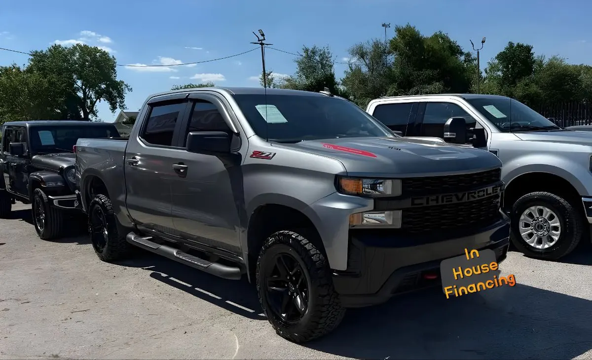

2022 Chevrolet Silverado 1500 Custom Trail Boss
Black • ID CCH-316

1/3General
| Year | 2022 |
|---|---|
| Make | Chevrolet |
| Model | Silverado 1500 Custom Trail Boss |
| Type | Truck |
| Color | Black |
| Mileage | 97,000 miles |
| Drivetrain | To be confirmed |
Model specifications
| Engine | varies depending on unit — the more common is 5.3L V8 EcoTec3; also available: 2.7L Turbo I4, 3.0L Duramax diesel I6 and 6.2L V8 |
|---|---|
| Horsepower | 355 hp (5.3L); 310 (2.7L); 277 (diesel); 420 (6.2L) — varies depending on unit |
| Torque | 383 lb-ft (5.3L); 348 (2.7L); 460 (diesel and 6.2L) — varies depending on unit |
| Transmission | 8-speed automatic (2.7L, 5.3L) or 10-speed (diesel, 6.2L) |
| Model drivetrain | varies depending on unit (4x2 or 4x4) |
| Fuel economy (MPG) | City: 19 (2.7L); 15 (5.3L 4WD) — varies depending on unit. Highway: 22 (2.7L); 20 (5.3L 4WD); up to 31 (diesel) — varies depending on unit |
| Fuel | Gasoline (diesel in the duramax) |
| Max towing | 13,300 lb |
| Seats | 5-6 |
| Body style | Pickup |
Typical figures for this year and model, taken from public sources (manufacturer, KBB, Edmunds). The dealer confirms the exact engine, drivetrain and equipment of this unit.
Great for
For anyone who needs a truck for work and everyday driving.
Year, mileage and features come from the inventory data; confirm this unit's exact details with the dealer. This sheet shows no prices: the dealer provides them in writing.